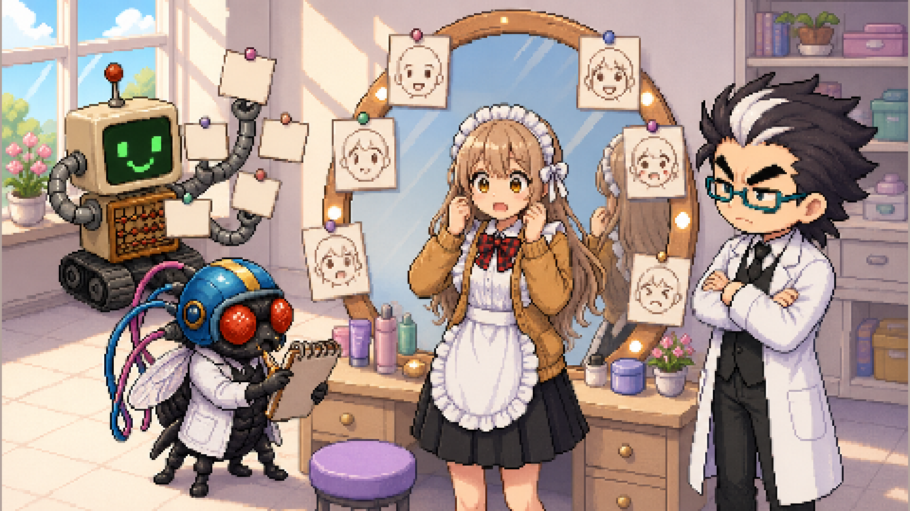
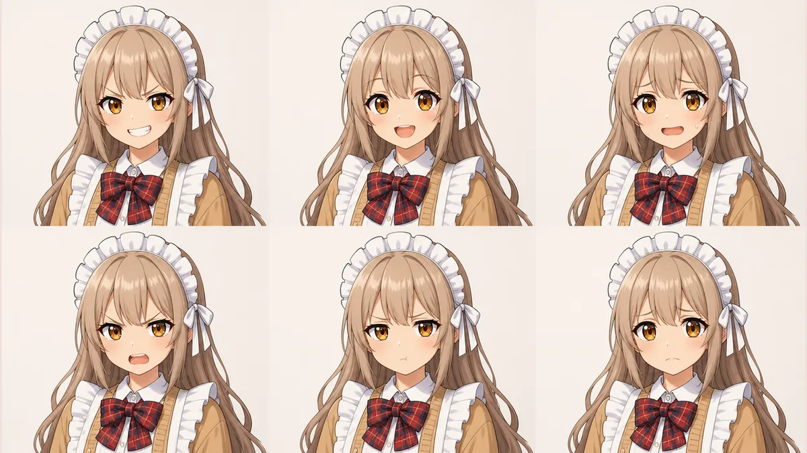
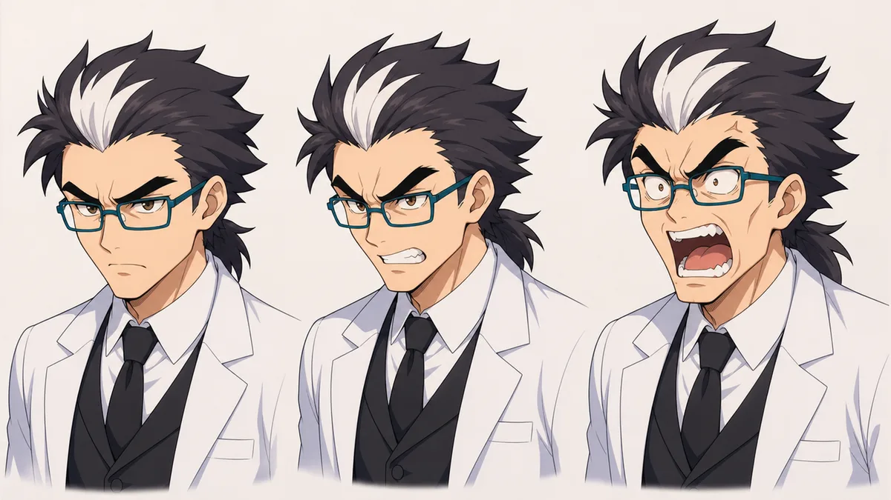
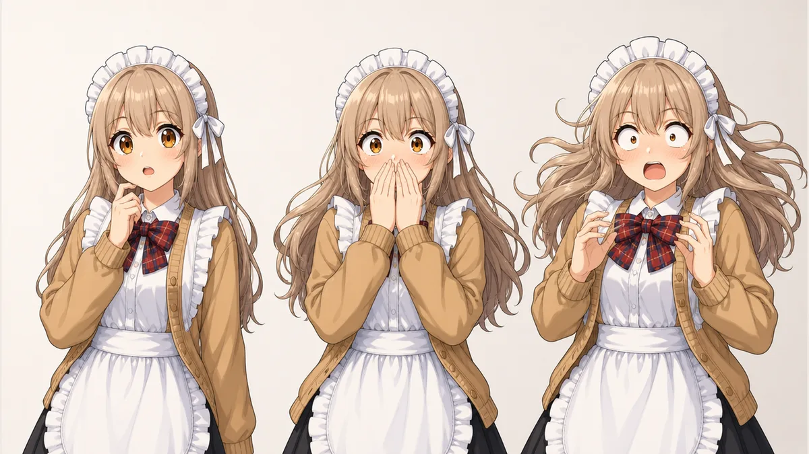
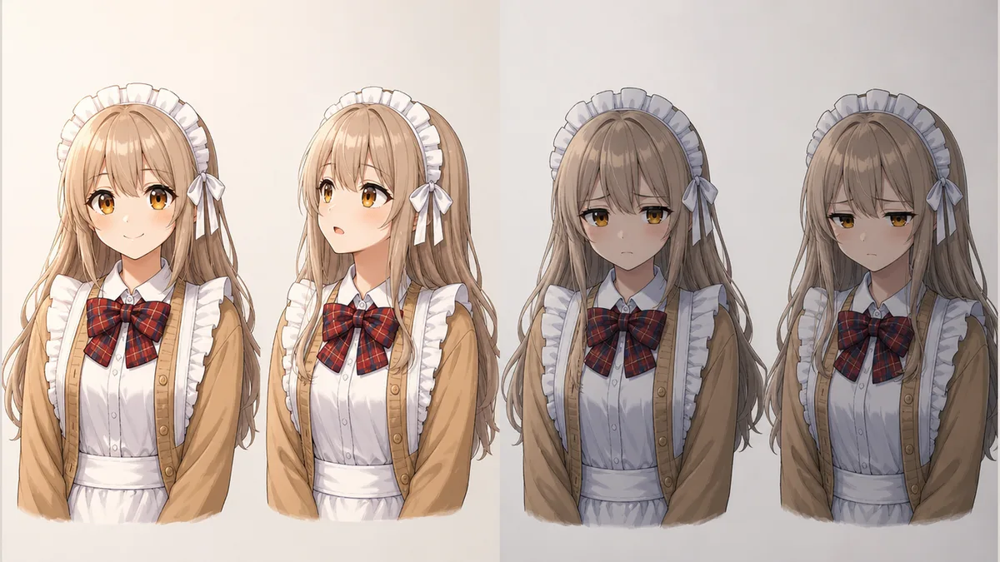
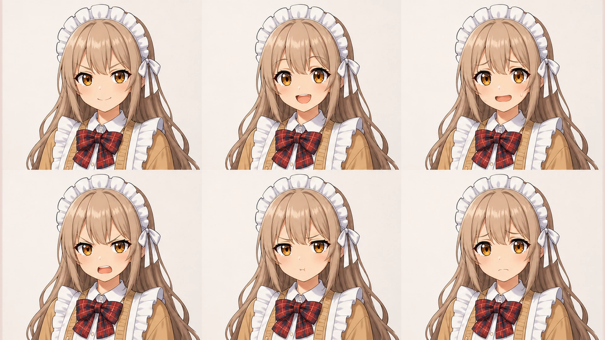
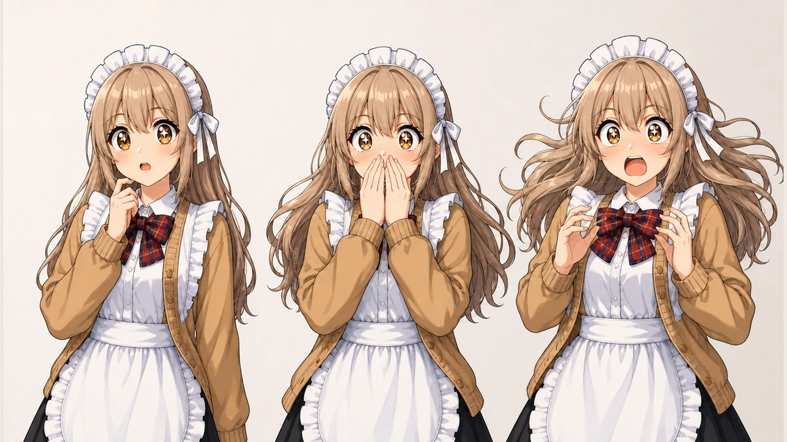
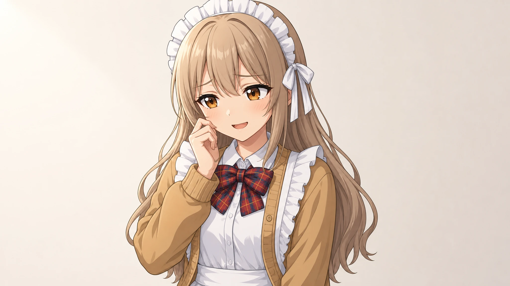
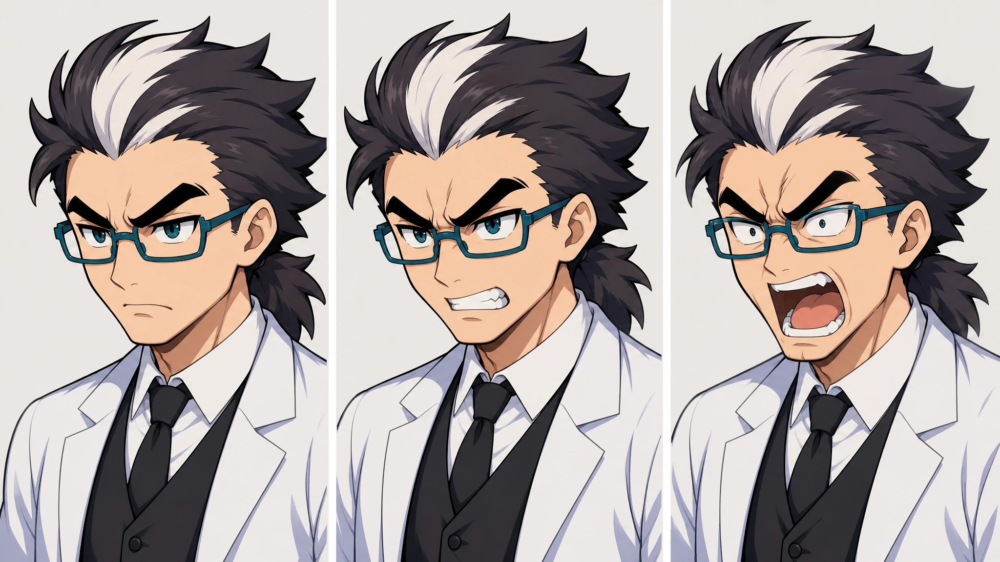

오늘의 과제

박사기본 감정 여섯 가지다. 기쁨·분노·슬픔·즐거움, 그리고 놀람과 멍함.

주판봇여섯 개면 얼굴 여섯 장만 외우면 됩니다! 쉽습니다!

초파리 연구원그럼 '웃는데 곤란한 얼굴'은 몇 번째 장이야? 눈썹과 입을 따로 움직여 보자.

모아저는 여섯 가지 표정을 다 지어 봐야 하는 거죠…?

모델은 모아입니다. 분노 장면에는 박사가 손님 모델로 나옵니다. 주판봇은 감정마다 정해진 얼굴 하나를 외우고, 초파리는 눈썹과 입의 조합으로 감정을 만듭니다.
그림 실력·코드·수식을 몰라도 됩니다. 실험을 눌러 보며 따라오세요.
눈썹 안쪽을 올리고 내리는 것과 입꼬리의 방향만으로 큰 감정이 나뉩니다
'웃는데 눈썹이 처진' 얼굴은 미안한 웃음입니다. 입은 웃고 눈썹은 곤란한 조합입니다.
3D 얼굴의 표정 값(블렌드셰이프)도 눈썹 안쪽 올림, 눈썹 내림, 입꼬리 올림·내림처럼 부위별로 나뉘어 있습니다. 표정 시트를 이 두 축으로 정리하면 값을 정하기 쉽습니다.


입꼬리가 올라가고 눈썹이 편하면 밝은 웃음, 입꼬리가 내려가고 눈썹 안쪽이 올라가면 슬픔, 눈썹 안쪽이 내려가면 화남입니다.
두 축이 서로 다른 말을 하면 섞인 감정이 됩니다. 웃는 입 + 올라간 눈썹 = 곤란한 웃음, 다문 입 + 내린 눈썹 = 짜증이나 결심입니다.
작업에서는 표정 시트를 이 지도처럼 배치해, 장면에 필요한 감정이 어느 위치인지 먼저 고릅니다.

AI에게 '슬프게 웃는 모아'를 부탁했더니 그냥 활짝 웃었습니다. 왜 그럴까요?
도구는 '웃는다'에 끌려 눈썹을 편하게 둡니다. 'smiling mouth, but inner eyebrows raised and drawn together'처럼 눈썹과 입을 따로 적어야 섞인 감정이 나옵니다.
입을 다물고 참다가, 터지면 입을 열고 주름을 늘립니다
화를 참는 사람은 이를 악물고 주먹을 쥐며 목을 움츠립니다. 터질 때 비로소 입이 열립니다.
만화에서는 참는 컷에 미간 주름 한두 줄과 다문 입을, 터지는 컷에 주름을 늘리고 눈동자를 조금 작게 그립니다. 선을 많이 쓸수록 긴장감이 커지기 때문에 주름 수를 단계마다 아껴 씁니다.

분노 50 아래는 참는 단계입니다. 입은 へ자로 다물고, 고개를 살짝 숙이고, 미간 주름은 적게 둡니다.
50을 넘으면 터지는 단계입니다. 입을 크게 열고, 주름을 늘리고, 눈동자를 조금 작게, 좌우를 어긋나게 그립니다.
작업에서는 컷마다 분노 세기를 숫자로 정해 두면, 화가 쌓이는 흐름이 장면 전체에서 이어집니다.

AI에게 'angry'만 주면 처음부터 소리치는 얼굴이 나옵니다. 참는 분노는 어떻게 부탁할까요?
'suppressed anger: lips pressed into a frown, jaw clenched, head slightly lowered, a small crease between the brows'처럼 참는 단계의 모양을 적습니다. 'angry'는 터지는 쪽으로 끌려가기 쉽습니다.
눈은 크게 뜨고 눈동자는 줄여 흰자를 늘립니다

학교 수학으로 보면 — 원의 넓이 — 넓이는 지름(반지름)의 제곱에 비례합니다. 지름을 절반으로 줄이면 넓이는 4분의 1이 됩니다.
| 식 조각 | 뜻 |
|---|---|
| r | 눈동자 지름 ÷ 눈 지름 |
| r² | 눈동자가 차지하는 넓이 비율 |
| 1 − r² | 흰자가 차지하는 넓이 비율 |

놀란 순간 사람은 펄쩍 뛰거나 굳어 버립니다. 어깨가 솟고, 손이 입을 가립니다.
만화에서는 놀람의 세기를 머리카락 부피로도 보여 줍니다. 조금 놀람은 평소 부피, 많이 놀람은 조금 크게, 아주 놀람은 크게 부풀립니다.
놀람 70에서 눈동자 지름은 0.455, 흰자는 1 − 0.455² ≈ 79%입니다. 눈은 크게, 눈동자는 작게가 놀람의 약속입니다.
섞인 놀람(기쁨·어이없음·슬픔·공포·불안·분노)은 눈이 아니라 눈썹과 입이 갈라 줍니다.
놀람이 클수록 머리카락 부피를 키우고, 손이 입을 가리는 동작을 크게 합니다.

AI의 놀란 얼굴이 눈동자가 크고 반짝여서 감동한 것처럼 보입니다. 어떻게 고칠까요?
'eyes wide open with small pupils, lots of white visible'처럼 눈동자 크기를 직접 적습니다. 'sparkling eyes'는 빼세요.
즐거움과 슬픔이 끝까지 가면 둘 다 '虚(멍함)'가 됩니다
편안할 때 사람은 눈썹이 느슨해지고 입이 살짝 벌어집니다. 지쳤을 때는 어깨 각도가 어긋나고 얼굴이 앞으로 나옵니다.
만화에서는 어두운 멍함에 눈동자를 지운 흰 눈을 쓰고, 밝은 멍함에는 두 눈의 초점을 어긋나게 그립니다. 楽은 감정이라기보다 '상태'라서 표정 근육보다 손과 어깨의 힘 빠짐으로 보여 줍니다.
楽에서 힘을 빼면 미소가 작아지고 입이 살짝 벌어지며, 두 눈의 초점이 어긋납니다. 이것이 밝은 멍함입니다.
哀에서 힘을 빼면 찌푸렸던 눈썹마저 풀리고, 눈동자를 지운 흰 눈과 어긋난 어깨가 남습니다. 이것이 어두운 멍함입니다.
작업에서는 멍한 장면이 밝은 쪽인지 어두운 쪽인지 먼저 정하고, 눈의 초점과 어깨로 구분합니다.

AI에게 'blank expression'을 부탁했더니 은은하게 웃는 얼굴이 나왔습니다. 왜 그럴까요?
도구는 인물 그림에 기본 미소를 넣는 버릇이 있습니다. 'no smile, mouth slightly open, unfocused eyes looking at nothing, relaxed eyebrows'처럼 미소를 빼고 눈의 초점까지 적습니다.
이 부에서 배운 원리를 그림 생성 AI(Genspark 등)로 직접 확인합니다. A는 이 페이지 그림을 실제로 만든 프롬프트, B는 원리를 하나 빼거나 바꾼 비교용 문장입니다.
참고 그림 내려받기: haru_anime_base · sia_anime_base · moa_anime_base · haru_sheet · sia_sheet · moa_sheet · doctor_sheet · fruitfly_sprites_6 · jupanbot_ref_genspark_v0 · pixel_style_ref_prev_cover
눈썹 안쪽과 입꼬리 두 축으로 여섯 표정이 나뉘는지 실제 그림으로 봅니다.
첨부: refs/moa_anime_base.png, refs/moa_sheet.png, refs/doctor_sheet.png
Illustration, wide 16:9. Art style: high-quality anime illustration, clean confident lineart, two-tone cel shading, natural adult proportions. Match the attached reference images exactly (face, hair, colors, accessories). All characters are adults in their early twenties (the Professor is an adult man in his thirties, normal proportions, not chibi); modest outfits exactly as described. An expression sheet of Moa (adult maid intern, long ash-beige wavy hair, white frilled maid headband with a white ribbon over her LEFT ear, amber eyes), wearing camel knit cardigan over a white blouse, red and navy plaid bow tie, white frilled apron, black skirt: six head-and-shoulder portraits in two rows and three columns. Top row (mouth corners raised): inner eyebrows pulled down (mischievous grin), relaxed eyebrows (bright smile), inner eyebrows raised (troubled smile). Bottom row (mouth corners lowered): inner eyebrows pulled down (angry), relaxed eyebrows (sulky), inner eyebrows raised (sad). Same face angle in all six. Light from the upper left. Plain off-white studio background or a bright clean lab interior. No text, no letters, no numbers, no speech bubbles, no logos, no watermark, no revealing clothing, not childlike, no school uniform, not resembling any famous anime character.
Same image, same layout. Change only: keep the eyebrows exactly the same relaxed shape in all six portraits; only the mouths change. Still no text.

실제 결과: A는 위 줄(씩 웃음·밝은 웃음·곤란한 웃음)과 아래 줄(화남·뾰로통·슬픔)이 눈썹으로 갈렸습니다. B는 눈썹을 모두 같게 하라고 했지만 눈썹 차이가 조금 줄었을 뿐 완전히 같아지지 않았고, 여섯 장의 차이도 약간 흐려진 정도입니다. 도구는 '감정 낱말'에 맞춰 눈썹을 다시 움직이는 버릇이 있습니다.
놀람이 커질수록 눈동자는 작아지고 머리카락은 부푸는지 봅니다.
첨부: refs/moa_anime_base.png, refs/moa_sheet.png, refs/doctor_sheet.png
Illustration, wide 16:9. Art style: high-quality anime illustration, clean confident lineart, two-tone cel shading, natural adult proportions. Match the attached reference images exactly (face, hair, colors, accessories). All characters are adults in their early twenties (the Professor is an adult man in his thirties, normal proportions, not chibi); modest outfits exactly as described. Three upper-body portraits of Moa (adult maid intern, long ash-beige wavy hair, white frilled maid headband with a white ribbon over her LEFT ear, amber eyes), wearing camel knit cardigan over a white blouse, red and navy plaid bow tie, white frilled apron, black skirt: 1) slightly surprised — eyes a little wider, one hand lightly near her chin, hair normal; 2) quite surprised — both hands covering her mouth, pupils smaller, hair volume a little bigger; 3) extremely surprised — eyes wide open with very small pupils and lots of white, mouth open, hair puffed up, shoulders jumping. Light from the upper left. Plain off-white studio background or a bright clean lab interior. No text, no letters, no numbers, no speech bubbles, no logos, no watermark, no revealing clothing, not childlike, no school uniform, not resembling any famous anime character.
Same image. Change only: in all three panels make the pupils LARGER and sparkling as the surprise grows. Keep everything else the same.

실제 결과: A는 3단계에서 눈동자가 작아지고 흰자가 늘며 머리카락이 부풀었습니다. B는 눈동자가 커지고 반짝임이 들어가, 3단계가 놀람보다 들뜬 기쁨에 가깝게 보입니다. 눈동자 크기 하나로 감정이 바뀌는 것이 확인됩니다.
'직접 만들어 보기'가 이미 만든 프롬프트를 비교하는 실습이라면, 연습 과제는 여러분이 직접 문장을 쓰고 이어 붙이는 연습입니다. 단계를 차례로 따라 하고, 마지막에 예상 결과 그림과 견주어 확인표로 점검하세요.
참고 그림 내려받기: haru_anime_base · sia_anime_base · moa_anime_base · haru_sheet · sia_sheet · moa_sheet · doctor_sheet · fruitfly_sprites_6 · jupanbot_ref_genspark_v0 · pixel_style_ref_prev_cover
난이도 중급 · 걸리는 시간 약 20분 · 원리: 1단계 눈썹과 입
입은 웃고 눈썹 안쪽은 올라간 '곤란한 웃음'을 만듭니다. 감정 낱말 대신 눈썹과 입을 따로 적는 연습입니다.
첨부: refs/moa_anime_base.png, refs/moa_sheet.png
먼저 일부러 낱말 하나로만 만들어 봅니다. 대개 그냥 밝은 웃음이 나옵니다.
Upper body portrait of Moa from the attached reference, awkward smile. Match the attached reference exactly (face, hair, colors, accessories). An adult woman in her early twenties, adult proportions. No text, no logos.
새 대화에서 눈썹과 입을 나눠 적습니다.
Upper body portrait of Moa from the attached reference. Mouth: corners lifted in a small smile, lips slightly parted. Eyebrows: inner ends raised and drawn together. Eyes: slightly narrowed, glancing to the side. One hand scratching her cheek. Mood: an apologetic, troubled smile. Match the attached reference exactly (face, hair, colors, accessories). An adult woman in her early twenties, adult proportions. No text, no logos.
웃음이 너무 밝으면 눈썹만 더 올립니다.
Same image. Change only: raise the inner ends of the eyebrows higher. Keep the same mouth and framing.
입만 보면 웃고, 눈썹만 보면 곤란해합니다. 두 곳이 다른 말을 해서 '미안한 웃음'이 되어야 합니다.

실제 결과: 볼을 긁으며 웃는 모아가 나왔고, 입꼬리는 올라가고 눈썹 안쪽은 살짝 올라가 미안한 웃음으로 읽힙니다. 눈썹이 더 올라가면 곤란한 기색이 커집니다(3단계).
난이도 중급 · 걸리는 시간 약 25분 · 원리: 2단계 분노의 두 단계
손님 모델 박사의 분노를 세 컷으로 이어 그립니다. 한 컷에 하나씩, 입 → 주름 → 비대칭 순서로 세기를 올립니다.
첨부: refs/doctor_sheet.png
첫 컷: 참는 단계. 입을 다물고 고개를 살짝 숙입니다.
Head-and-shoulders portrait of the Professor from the attached reference (adult man, white streak in dark spiky hair, thick eyebrows, teal rectangular glasses), suppressed anger: lips pressed into a frown, head slightly lowered, one small crease between the brows. Comic, not scary. No text.
둘째 컷: 같은 대화에 이어 붙여 이를 악물게 합니다.
Same image. Change only: teeth clenched and visible, deeper creases between the brows, glaring eyes. Keep the same framing.
셋째 컷: 폭발. 입을 크게 열고, 좌우를 어긋나게 합니다.
Same image. Change only: mouth wide open shouting, more creases, smaller pupils, left and right sides of the face slightly asymmetric. Keep the same framing.
세 컷이 같은 구도로 이어지고, 입 → 주름 → 비대칭 순서로 세기만 올라가야 합니다. 첫 컷은 조용하고 마지막 컷만 시끄러워야 이야기가 생깁니다.

실제 결과: 예상대로 나왔습니다. 첫 컷은 입을 다문 채 노려보고, 둘째 컷은 이를 악물고, 셋째 컷만 입을 크게 벌렸습니다. 세 컷의 구도와 옷이 같아 세기만 올라가는 흐름이 보입니다.
| 항목 | 주판봇 | 초파리 |
|---|---|---|
| 닮음 | 8 | 8 |
| 원리 | 4 | 9 |
| 자연스러움 | 6 | 8 |
| 합계 | 18 | 25 |


점수는 이야기 속 예시입니다. 실제 그림을 평가한 값이 아닙니다.
| 주제 | 한 줄 | 작업에서는 |
|---|---|---|
| 두 축 | 눈썹 안쪽과 입꼬리로 감정의 방향이 갈린다 | 섞인 감정은 두 축이 다른 말을 할 때 |
| 분노 | 참는 단계 → 터지는 단계 | 참을 때는 입을 다물고, 터질 때 열고 주름을 늘린다 |
| 놀람 | 흰자 = 1 − r² | 눈은 크게, 눈동자는 작게, 머리카락은 부풀게 |
| 멍함 | 楽의 끝은 밝은 멍함, 哀의 끝은 어두운 멍함 | 초점 어긋남과 흰 눈으로 구분 |
이 페이지에 나온 개념·방법·비유·쓰임을 모았습니다. 검색하고, "설명 보러 가기"로 본문에 돌아갑니다.
지식 색인을 출처와 함께 파일로 내려받습니다. 서지 관리는 BibTeX·RIS, 온톨로지 편집은 Turtle, 그래프 도구는 CSV, 여러 페이지 합치기는 kg.json입니다.